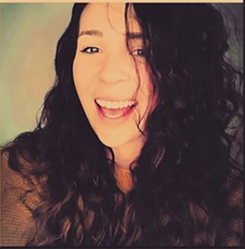

I'm Karina Morera. I was born in San Francisco, Mission District where I grew my love for the arts. Walking down the street, as a kid, it was always bright and vibrant with culture. I continued my love for the arts and worked as an art, music, and English teacher. After living abroad for 5 years and continuing to work as an Art Director, Educational and Early Childhood Developmental Counselor, I decided to blank my art abilities and skills to learn more about Graphic Design. I have have interior designed two schools and re-banned them. I am currently working on banding for children's products. On my free-time, I enjoy playing music, painting, going on hikes and being social.
